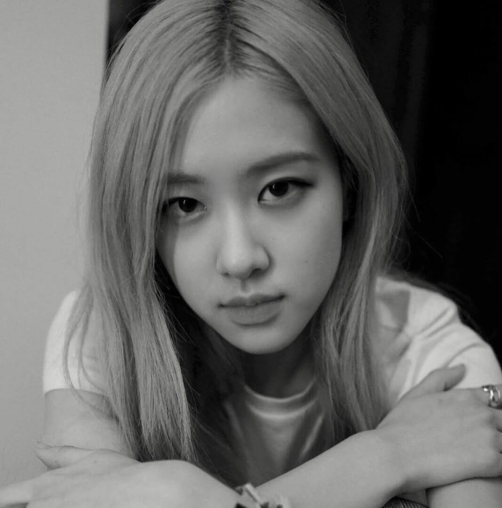

PROFILE

Park Chae Young
박채영
■ Date of Birth : 1997. 02. 11
■ Height/Weight : 168cm・46kg
■ Nickname: Rose, Rosie, “Pasta”
■ Position : Main Vocalist, Lead Dancer
■ Birthplace : New Zealand
■ Blood Type: B
■ Instagram: @roses_are_rosie